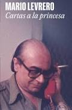
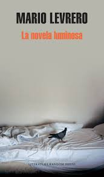
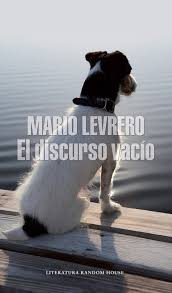
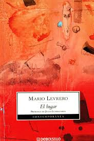
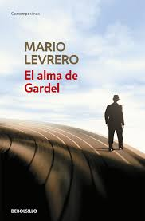
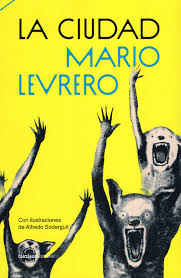
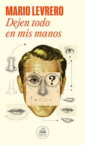
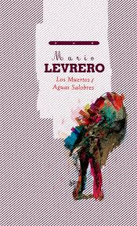
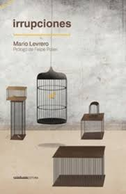

Mario Levrero
Mario Levrero (1940-2004) fue un escritor uruguayo nacido en Montevideo. Destacado por El discurso vacío y su combinación de realismo, introspección y elementos fantásticos, exploró temas como la soledad, el deseo y la búsqueda de identidad. Su obra, que incluye novelas, ensayos y relatos cortos, deja un legado profundo en la literatura latinoamericana.
Galería de Obras

Cartas a la Princesa

La Novela Luminosa

El Discurso Vacío

El Lugar

El alma de Gardel

La ciudad

Dejen todo en mis manos

Los muertos

Irrupciones